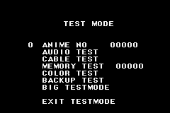

J.League Winning Eleven Advance 2002 (Japan)
EEPROM 4K Save Format Spec gbakit Built-In Debug Menu Patch 💾 MultiBoot 🎮 4P Link
Cartridge Identity
- Game Code
A2JJ(FamilyA2J)- Header Title
JWEA2002- Maker / Revision
EM/ rev0- ROM Size
- 8.0 MiB (8,388,608 B)
- Save Media
EEPROM 4K- SHA-256
49115d02cb64ae7ca53feff84e6c6ae05ffa4befea8f9a54475ea788ad153fd4
Screenshots

Debug Menu Re-Enablement Patch (.ips)
Download A2JJ-debug.ips (17 B IPS / 4 B delta)
- Hook Mechanism
thumb_state_init_override· Override initial main-loop state store at 0x000312 (ldr r0,[pc,#0x3c]; strh r4,[r0] -> movs r1,#5; strb r1,[r0]) to boot directly into Konami TEST MODE (ANIME NO / AUDIO TEST / CABLE TEST / MEMORY TEST / COLOR TEST / BACKUP TEST / BIG TESTMODE)- IPS SHA-256
72ea5da0d72d2230e4a4977731f5af1f1c935dc86d67990e81d3f61a316381f9
gbakit patch apply A2JJ-debug.ips original.gba patched-debug.gba

Link Cable & Multiplayer Communications
This title contains detected communication capabilities: 💾 MultiBoot 🎮 4P Link.
Detailed protocol specifications, SIO registers, Joybus commands, and MultiBoot sequences are documented in the Link & Multiplayer Reference.
- Multi-Player SIO (4P)
- 16-bit ring network · SIOCNT (
0x04000128) literals:0x009c20,0x009f08,0x00a208· SIODATA32/SIOMULTI0 (0x04000120) literals:0x0ca29c - Single-Cart MultiBoot
- Single-Cartridge MultiBoot (Download Play) client/server handler · Thumb SWI 0x25 (
0xDF25):0x230f06,0x231a58,0x276a4e,0x28344a
Battery Save Format Specification
Open Full Save Format SpecDownload save-format.json
- Specification Coverage
- 3 mapped fields · 0 verified checksum(s) · Confidence: HIGH
- gbakit Built-In Support
- Built-in (A2JJ)
gbakit save verify A2JJ save.sav
gbakit save decode A2JJ save.sav
gbakit save fix A2JJ damaged.sav -o repaired.savObserved Battery Save Layout
- Fill Byte & Active Size
0xFFfill · 46–46 / 512 B active (entropy 1.93 bits/B)- Active Offset Ranges
0x0–0x1,0x3–0x2B,0x2D–0x2F(3 total)- ASCII Magic / Headers
- None detected
- Observed Variable Regions
- 0 bytes across 0 spans: None
- Candidate Checksum/Counter Spans
- None
Text, Fonts & Scene Data
- Primary Text Encoding
- 16-bit / UTF-16LE text (
5ASCII strings) - Font & VWF Indicators
- VWF Width Table 1bpp Font · BIOS SWIs: BitUnPack
0x10:28· LZ770x11/12:25· Huffman0x13:3· RLE0x14/15:11 - Scene & Packaging
203ROM pointer tables (≥32 entries,8≥200) ·0relativeu32TOCs ·91OAM metasprite hits
Hardware MMIO Subsystems
ppu_display0x8005808,0x8017118,0x8020a84,0x803e75c,0x80400b8,0x80b1a8c,0x80c434c,0x80ca6e8,0x80cacec